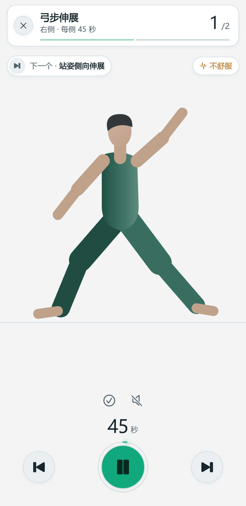
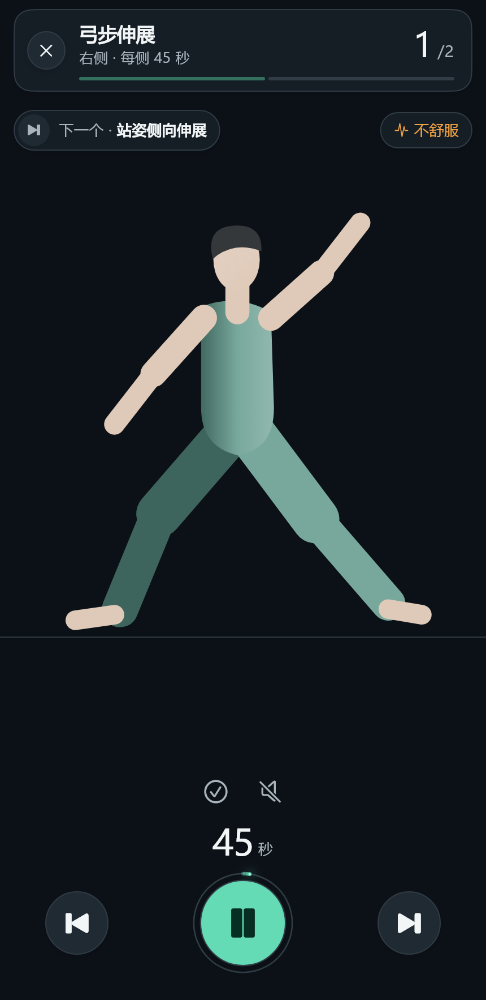
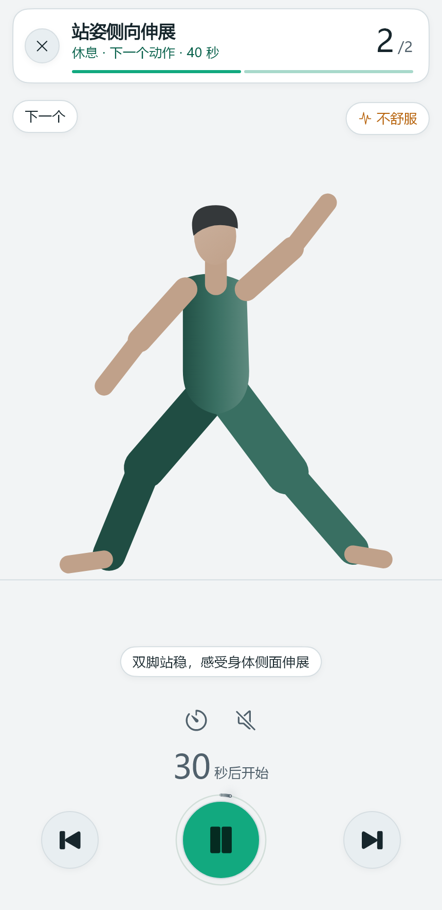
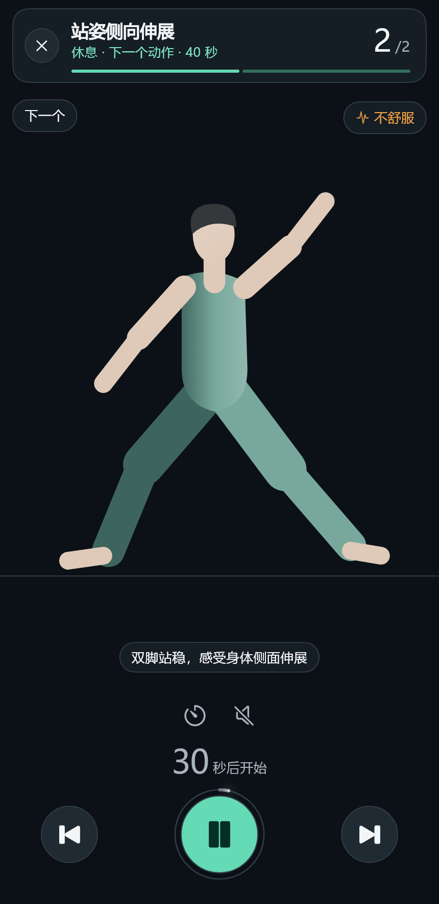
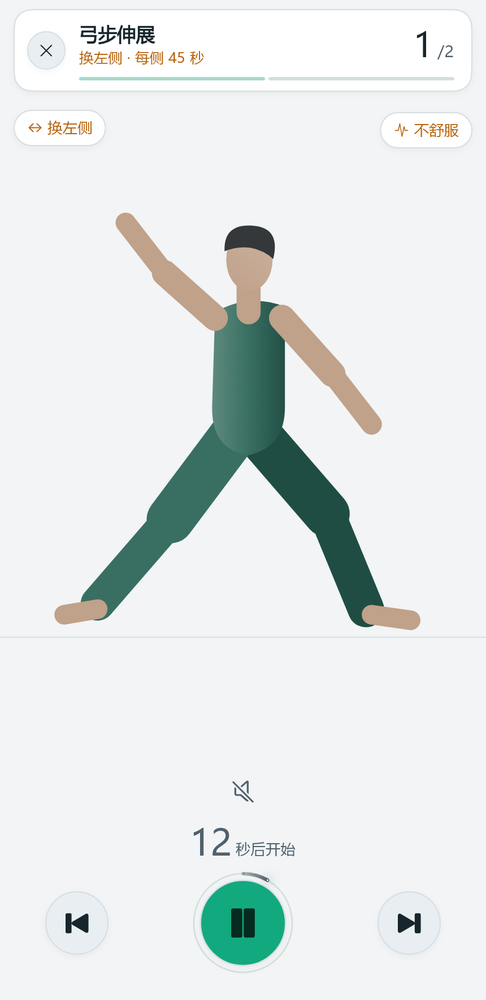
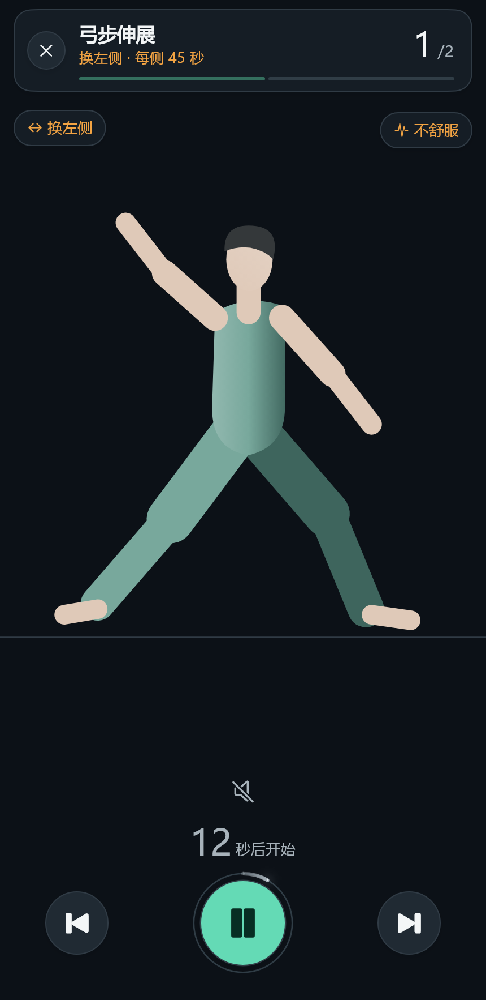
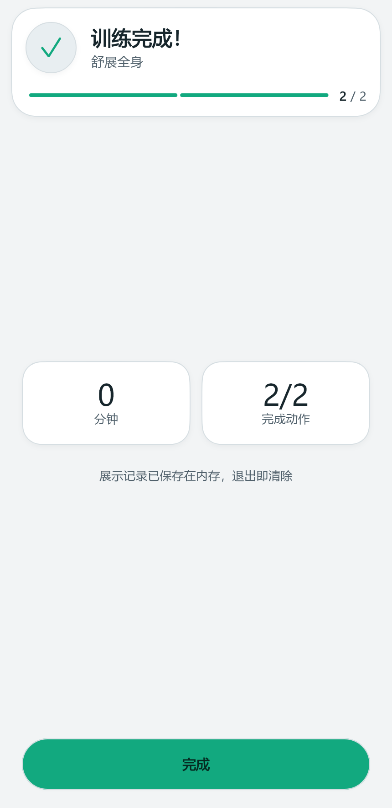
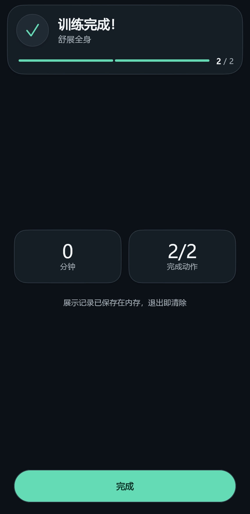

SDK 实色分层 UI
ugk_trainer 0.3.0 · ugk_coach_ui 0.2.0。三级不透明表面、1px 低对比描边、轻固定阴影。训练布局与 Morph Pulse 保持；玻璃实现及公开参数直接删除。
trainer 257/257 · coach_ui 33/33 · 展示 4/4 · 协议 8/8；三处分析无问题；Web release 与 Android debug 构建通过。106 个控件外框最大偏移 0dp。
下图为本轮软件测试截图，非真机或性能证据。main 等开哥批准后合入和推送。
打开 Web 演示 · 删除审计与 API 迁移 · 验证记录 · 源制品摘要







